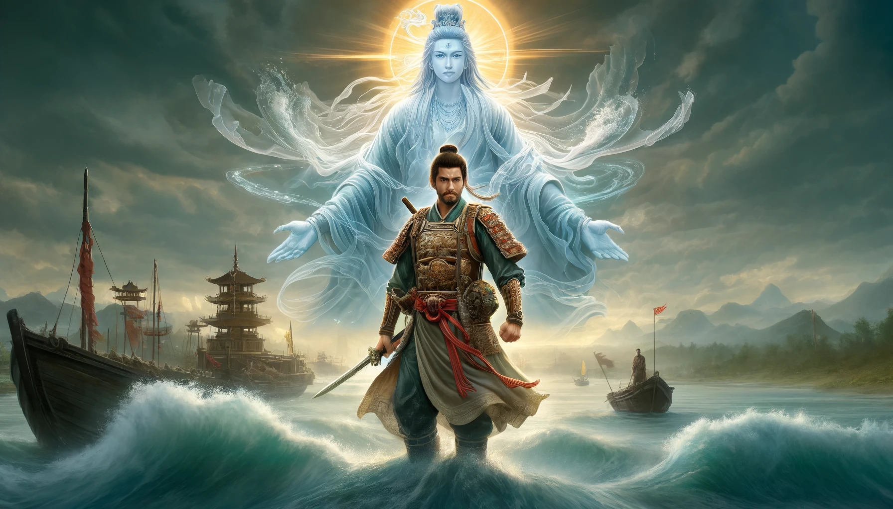

Không khuyến khích đọc chương 1 vì nó có miêu tả không đúng về vấn đề tôn giáo. Bạn có thể bỏ qua và bắt đầu đọc từ chương 2, mình đảm bảo bạn vẫn sẽ hiểu cốt truyện và có những trải nghiệm thoải mái.
"Yết Kiêu - Luân hồi Thủy Long Bồ Tát" là một câu chuyện kết hợp giữa lịch sử và tôn giáo, vẽ nên bức tranh hùng tráng của những cuộc kháng chiến chống quân xâm lược Nguyên-Mông.
Danh sách các phần
Phần 1: Cội Nguồn
- Chương 1: Quyết Định Luân Hồi
- Chương 2: Giấc Mơ Kỳ Lạ
- Chương 3: Liệu Có Bình Yên
- Chương 4: Hành Trình Phá Án và Quyết Định Rời Xa Quê Hương
- Chương 5: Gặp Gỡ Thầy Dạy Võ
- Chương 6: Rèn Luyện Khả Năng
- Chương 7: Đối Mặt Với Thử Thách
- Chương 8: Học Hỏi Chiến Lược Quân Sự
- Chương 9: Cứu Đoàn Thuyền Buôn
- Chương 10: Trở Thành Người Hùng
- Chương 11: Gặp Gỡ Hưng Đạo Đại Vương
- Chương 12: Gia Nhập Quân Đội Triều Trần
- Chương 13: Thể Hiện Tài Năng
- Chương 14: Nhận Nhiệm Vụ Quan Trọng
- Chương 15: Chiến Công Đầu Tiên
- Chương 16: Giao Lưu Với Các Tướng Lĩnh
- Chương 17: Bảo Vệ Thủy Lộ
- Chương 18: Chuẩn Bị Cho Trận Chiến
- Chương 19: Sẵn Sàng Đối Đầu Quân Nguyên-Mông
- Chương 20: Tâm Sự Với Đồng Đội